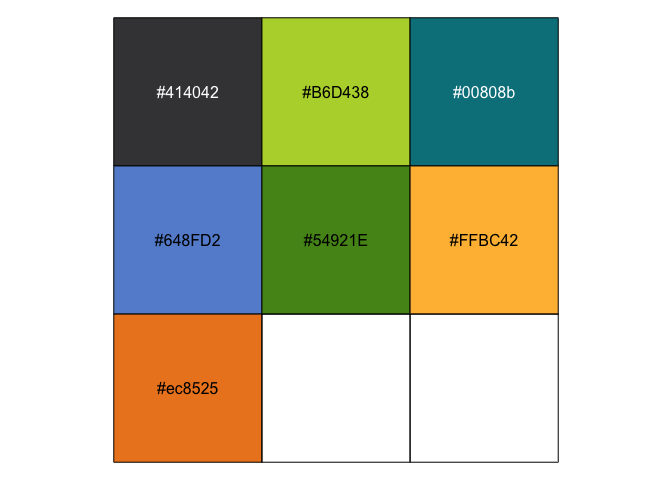
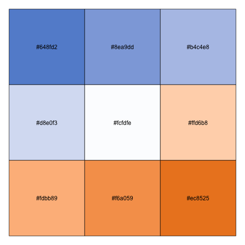
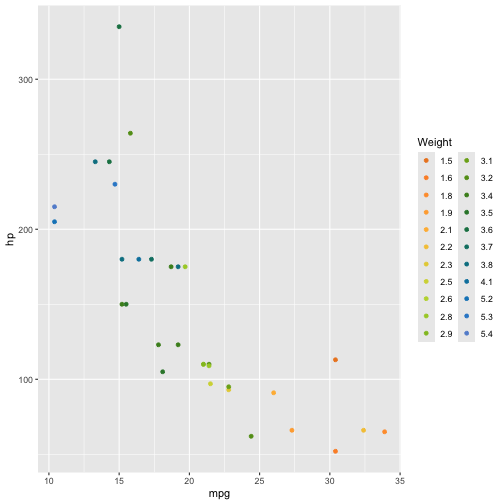

This repository contains the code for the R package {AAGIPalettes}, which once installed in your R session (local or RStudio Server), provides helper functions, data and palettes for working with AAGI colours.
Installation instructions
You can install {AAGIPalettes} like so:
if (!requireNamespace("remotes", quietly = TRUE)) {
install.packages("remotes")
}
remotes::install_github("AAGI-Org-AU-Public/AAGIPalettes",
dependencies = TRUE
)Quick start
Following are some quick examples of {AAGIPalettes} functionality.
Official Colours
{AAGIPalette} provides a data object of the official AAGI colours from the comms guide. You can see the hex code values in a named vector like so.
library("AAGIPalettes")
aagi_colours
#> AAGI Black AAGI Bright Green AAGI Teal AAGI Blue
#> "#414042" "#B6D438" "#00808b" "#648FD2"
#> AAGI Green AAGI Yellow AAGI Orange
#> "#54921E" "#FFBC42" "#ec8525"Viewing Colours
{AAGIPalette} provides limited functionality for viewing and working with colours. You can plot the colours or palettes in the package as follows.
display_aagi_cols("aagi_colours")
Display the “aagi_BuOr” palette with 9 stops.
display_aagi_cols(name = "aagi_BuOr", n = 9)
Interpolating Colours
library(ggplot2)
x <- interpolate_aagi_colours()
# round the weights to clean up the legend, this is just an e.g. after all...
wt_vals <- x(length(unique(round(mtcars$wt, 1))))
ggplot(mtcars, aes(x = mpg, y = hp, colour = as.factor(round(wt, 1)))) +
geom_point() +
scale_colour_manual("Weight", values = wt_vals)